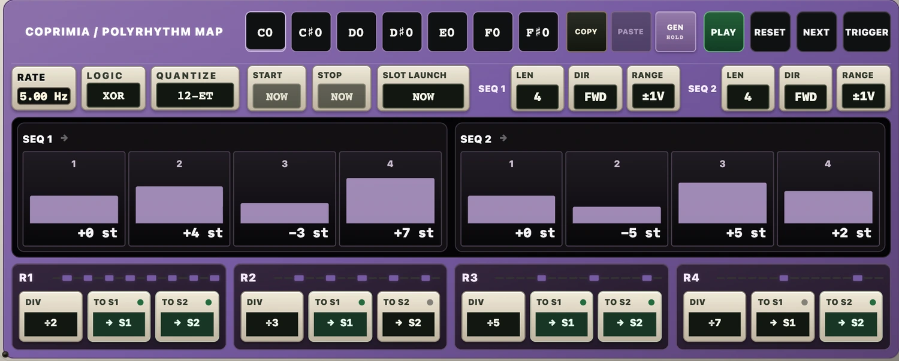
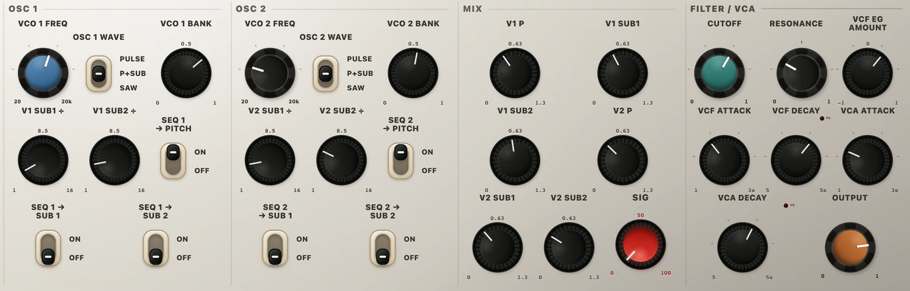
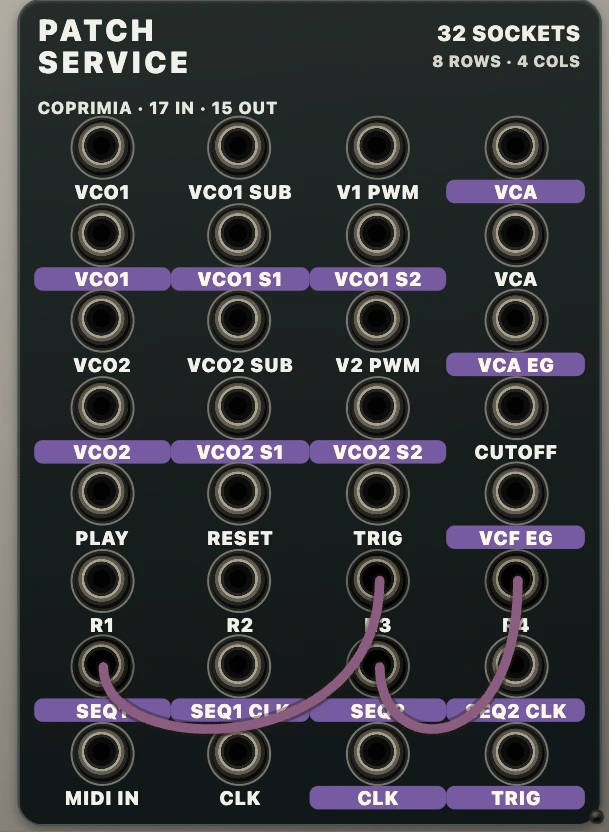

Polyrhythmic harmonic instrument · Manual
COPRIMIA
Build a six-tone sound from two oscillators and shape its movement with two pitch sequences and four clock dividers.

Play your first polyrhythm
Load a sound and listen to how the two four-step lanes move against each other.


- Start with a preset
Open the black preset display and choose a Factory sound.
- Start both playheads
Open SEQ and press PLAY. Observe the playheads of SEQ 1 and SEQ 2.
- Set two divisions
Try division 2 on R1 routed to S1 and division 3 on R2 routed to S2. Turn off the other routes for this comparison and listen to how the lanes line up again.
Build and shape six tones
Each oscillator and its two subharmonics form a family. Mix both families and shape the result with the filter and envelopes.


Sound and modulation
Build the voice, one relationship at a time.
Each VCO generates two lower voices through integer divisors. COPRIMIA derives much of its character from the relationship between the fundamentals, divisors and levels of all six sources.
Set VCO 1 FREQ and listen to VCO 1 by itself.
Raise SUB 1.1 and change VCO 1 SUB 1 FREQ to hear its subharmonic relationship to the fundamental.
Repeat with SUB 1.2, then work through the same process on VCO 2.
Use OSC 1 WAVE / OSC 2 WAVE to change the harmonic content of the two source families.
Once the chord is clear, use the six SOURCE LEVEL controls to decide which components dominate.
VCF, VCA AND DYNAMICS
After the six-source mix, the VCF and VCA shape movement independently. Separate attack/decay controls let timbre and level breathe at different rates.
Set CUTOFF and RESONANCE with FILTER EG AMOUNT near zero to hear the static filter first.
Raise FILTER EG AMOUNT and adjust VCF ATTACK / VCF DECAY for timbral motion.
Set VCA ATTACK / VCA DECAY independently to shape amplitude.
Add LADDER DRIVE or MIXER DRIVE from EXT only after the main source levels are balanced.
Re-check OUTPUT after increasing resonance or drive.
Edit the two pitch sequences
Work on both four-step lanes in SEQ. Each lane has its own range and playhead.
Playing and patterns
Explore the instrument’s own performance controls.
SEQ 1 and SEQ 2 remain the two canonical four-step sequences. SEQ is a software-native view of those same endpoints, with both runtime playheads visible at once.
Open SEQ to see SEQ 1 and SEQ 2 together, each with four large steps.
Drag vertically on a step to change its value; continue horizontally or diagonally to draw across several steps.
Use ±1V / ±2V / ±5V above each lane to set its independent range.
Watch the playhead borders: SEQ 1 and SEQ 2 may advance at different times because they receive different rhythm combinations.
QUANTIZE in SEQ controls the same OFF / 12-ET / 8-ET / 12-JI / 8-JI parameter used by the runtime.
Divide and route the clock
Set four divisions, route pulses to either lane, and compare the effect of OR and XOR.
SEQ — FOUR DIVIDERS AND VISIBLE ROUTING
RHYTHM 1–4 divide the master clock and can drive SEQ 1, SEQ 2 or both. SEQ shows each divider, its routing and the resulting cycle relationships in one place.
In SEQ drag ÷R1…÷R4 vertically to choose an integer division from 1 to 16.
Use → S1 and → S2 below each rhythm generator to route it directly to either sequence.
Integer dividers create repeating relationships. Divisions 2 and 3 meet again after six clock pulses. Try one routing change at a time and RESET to compare from the same starting point.
Choose OR or XOR for pulse-combination logic and watch the two real playheads respond.
Press RESET whenever you want to compare two setups from the same temporal origin.
Patch clock, CV and audio
Use the patchbay to change how pitch, rhythm and articulation feed the voice.


PATCHBAY — CLOCK, CV AND AUDIO
The 32 sockets expose VCOs, subharmonics, sequences, clocks, triggers, envelopes and modulation. Patching lets you break the default relationship between rhythm, pitch and synthesis.
For external clock, patch a source to CLOCK IN; CLOCK OUT exports the system clock.
To move the filter from a sequence, patch SEQ 1 OUT → CUTOFF IN.
To modulate a rhythm divider, patch CV to RHYTHM 1–4; use CLOCK IN instead when you want an external clock source.
For external articulation, patch VCF EG OUT or VCA EG OUT to a compatible CV destination.
Use VCO 1/2 OUT and SUB 1/2 OUT to process harmonic components separately.
Switch full-state slots
Recall seven live snapshots with both lanes, rhythm, sound and patching together.
SEQUENCE SLOTS S1–S7 — SEQRHYTHM + SOUND
The seven slots are complete live snapshots: both lanes, four rhythm generators, routing, synthesis, patching, FX and performance state are stored together.
Choose a C0–F♯0 slot button to recall its stored state. SLOT LAUNCH sets immediate or quantized recall; the current sequence continues until the chosen boundary.
Changes to lanes, rhythms or synth controls automatically update the active slot.
COPY captures the active slot and sound. Select the destination, wait for recall, then PASTE. Only that destination is replaced; choose it deliberately before pasting.
If a knob or slider is still held while a new slot arrives, TOUCH WRITE keeps the held value authoritative and writes it into the new slot until release.
Full-state recall uses a short dezipper around the commit without stopping either playhead or the clock; MIDI keyswitches recall the same seven slots.
Set up EXT, SIG and GEN
Set MIDI and effects, shape a SIG gesture, and save a generated variation in the User library.
EXT & SIG
Advanced ranges, effects, MIDI and macro mapping.
- Inside EXT
EXT opens additional controls for this same instrument. Choose a tab and compare one setting at a time; close EXT to return to the main panel.
- Shape the effect returns
DELAY and REVERB in the header set the effect amount. In EXT → EFFECTS, shape the detailed effect controls. Start with a low amount so the original articulation stays clear.
- One gesture, several parameters
SIG is the red macro. In EXT → SIG, inspect its assigned targets and use ADD CONTROL to include another parameter. One gesture can then shape several related controls.
- Design the SIG gesture
LOW and HIGH define each target’s endpoints. LINEAR and, where available, LOG change its response. Save a signature copy before experimenting. SIG PRESSURE provides pressure-related shaping, including rise and fall times.
- MIDI control and feedback
EXT → MIDI contains the instrument’s MIDI options. Check the active channel and mapping before changing your host routing. A MIDI setting is separate from the audio patch cables.
GEN & memories
Profiles, ranges, locks, patches and USER library.
Tap GEN to create a variation. Hold GEN to open its compact settings panel. Adjust VARIATION, then generate from inside the panel to compare results without closing it.
- Constrain the result
MIN and MAX bound generated values. Drag vertically to edit; equal bounds fix a value. Explore the range groups, then press GEN inside the panel without closing it.
- Keep what already works
A lock keeps the current live value during GEN. Lock the parameters or groups you want to preserve, then generate variations in the remaining part of the sound.
- Routing and generation
The PATCH lock preserves the current cables during GEN. Keep it locked while exploring tone without changing your routing. Unlock it when you want GEN to vary the patch too.
- Playing and patterns
The header GEN works on the sound as a whole. The GEN inside the sequencer works on the focused sequence slot. Choose the destination slot first; use COPY/PASTE when you want an exact copy instead of a new variation.
- Save a USER sound
Open Preset Monitor and save the result explicitly as USER. Generated and edited sounds remain unsaved until you do this. Give the sound a useful name; keep a separate copy before making a major variation.